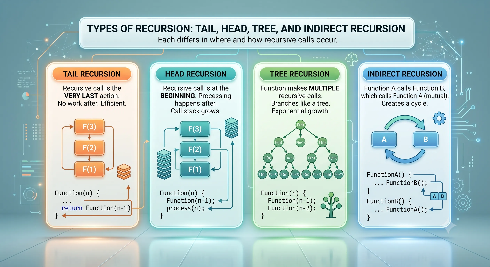
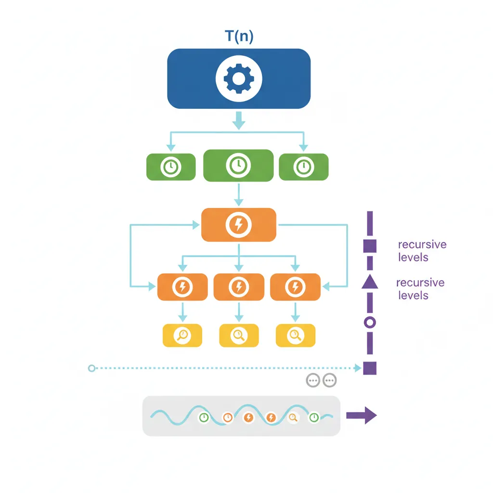
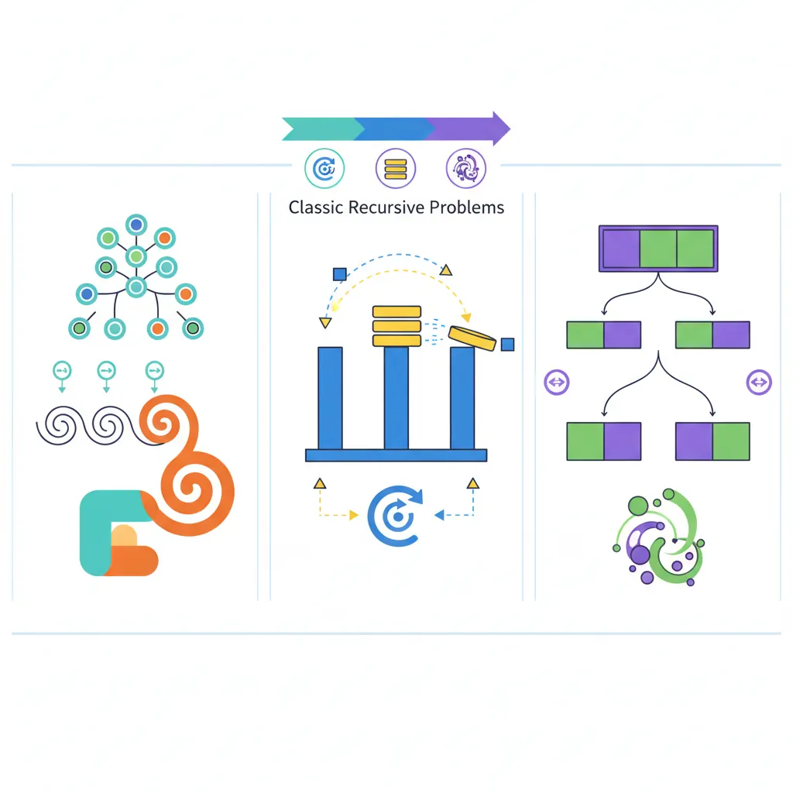

How Recursion Works
Recursion is a method where a function calls itself to solve a problem by breaking it down into smaller, similar subproblems. Every recursive solution needs two essential components.
Two Essential Components
- Base Case: The condition that stops recursion (prevents infinite calls)
- Recursive Case: The function calling itself with a modified input that moves toward the base case
Call Stack Tracing
Understanding how the call stack works is crucial for mastering recursion. Each recursive call creates a new stack frame with its own local variables.
What is a Stack Frame?
Every time a function is called, a stack frame is pushed onto the call stack containing: the return address, function parameters, and local variables. When the function returns, its frame is popped off. In recursion, each call adds a new frame until the base case is reached, then frames are popped as results are returned.
Types of Recursion
1. Tail Recursion
The recursive call is the last operation in the function. Can be optimized by compilers to use constant stack space (Tail Call Optimization).

graph TD
R["Recursion"]
R --> Direct["Direct Recursion"]
R --> Indirect["Indirect Recursion"]
Direct --> Linear["Linear
Single recursive call"]
Direct --> Tail["Tail
Last operation is call"]
Direct --> TreeR["Tree / Binary
Multiple recursive calls"]
Direct --> Nested["Nested
Recursive arguments"]
Indirect --> Mutual["Mutual
A calls B calls A"]
style R fill:#132440,stroke:#132440,color:#fff
style Direct fill:#16476A,stroke:#132440,color:#fff
style Indirect fill:#3B9797,stroke:#132440,color:#fff
Why Tail Recursion Matters
In tail recursion, the recursive call is the absolute last operation in the function — there's no pending computation (like multiplication, addition, or concatenation) waiting for the result to come back. Because nothing needs to be remembered after the call, the compiler can replace the current stack frame instead of pushing a new one. This is called Tail Call Optimization (TCO), and it converts \(O(n)\) stack space to \(O(1)\) — effectively turning recursion into iteration under the hood.
Language support varies: Scheme and Haskell
guarantee TCO by specification. JavaScript (ES6+) specifies it but only Safari
implements it. C/C++ compilers (GCC, Clang) perform TCO at -O2 or higher as
an optimization — not a guarantee. Java and Python never perform TCO by
design (Python's Guido van Rossum explicitly rejected it to preserve readable stack
traces). Understanding tail position helps you write recursion that can be
optimized, and recognize when you must convert to iteration manually.
2. Head Recursion
The recursive call is made before any other processing. Work is done during the "unwinding" phase.
3. Tree Recursion
The function makes multiple recursive calls in each invocation, creating a tree-like call structure.
Warning: Exponential Growth
Tree recursion often leads to exponential time complexity O(2n) because each call spawns multiple new calls. For Fibonacci, fib(40) makes over 300 million function calls! Always consider memoization or iterative solutions for tree recursive problems.
4. Indirect Recursion
Function A calls function B, which calls function A (or through more functions in a cycle).
5. Nested Recursion
A recursive call is used as an argument to another recursive call.
The Ackermann Function
The Ackermann function \(A(m, n)\) is named after German mathematician Wilhelm Ackermann. It is one of the earliest discovered examples of a total computable function that is not primitive recursive — meaning it can be solved by a computer program, but grows so unimaginably fast that it cannot be computed using basic loops where the number of iterations is known in advance. It requires deep recursion.
The function is defined for two non-negative integers using three rules:
$$A(m, n) = \begin{cases} n + 1 & \text{if } m = 0 \\ A(m - 1, 1) & \text{if } m > 0 \text{ and } n = 0 \\ A(m - 1, A(m, n - 1)) & \text{if } m > 0 \text{ and } n > 0 \end{cases}$$
The third rule — \(A(m - 1, \mathbf{A(m, n - 1)})\) — is the key: the function calls itself, then uses that result as input for another call to itself. This nested recursion drives its explosive growth.
How Fast Does It Grow?
| \(m\) | Growth Pattern | Example |
|---|---|---|
| 0 | Linear: \(n + 1\) | \(A(0, 5) = 6\) |
| 1 | Addition: \(n + 2\) | \(A(1, 5) = 7\) |
| 2 | Multiplication: \(2n + 3\) | \(A(2, 5) = 13\) |
| 3 | Exponentiation: \(2^{n+3} - 3\) | \(A(3, 5) = 253\) |
| 4 | Tetration (tower of exponents) | \(A(4, 2) = 2^{65536} - 3\) (19,729 digits!) |
\(A(4, 2)\) already exceeds the number of atoms in the observable universe. Attempting \(A(4, 3)\) would overflow any call stack almost instantly.
Why Computer Scientists Care
Stress-testing compilers: Even tiny inputs like \(A(4, 1)\) generate a massive number of function calls, making it ideal for benchmarking how well a compiler optimizes recursive calls and manages stack memory.
Algorithm analysis: The inverse Ackermann function \(\alpha(n)\) grows incredibly slowly and appears in the time complexity of the Disjoint-Set (Union-Find) data structure. For all practical input sizes, \(\alpha(n) \leq 4\), making Union-Find operations effectively \(O(1)\) amortized — a result we'll explore in Part 13: Advanced Structures.
Recurrence Relations
What is a Recurrence Relation?
A recurrence relation is a mathematical equation that defines a sequence where each term is expressed in terms of preceding terms. In algorithm analysis, we use recurrence relations to describe the time complexity of recursive algorithms.
General form: \(T(n)\) = [number of subproblems] × T([subproblem size]) + [work done outside recursive calls]
Breaking Down a Recurrence
Consider Merge Sort's recurrence: \(T(n) = 2T(n/2) + O(n)\)
- 2 = number of subproblems (we split into two halves)
- \(T(n/2)\) = each subproblem is half the size
- \(O(n)\) = work to merge the two halves back together
Understanding how to write and solve these equations is crucial for analyzing recursive algorithms!
Common Recurrence Patterns
Here are the most frequently encountered recurrence patterns in algorithm analysis:

Pattern Reference Table
| Recurrence | Result | Example Algorithm | Explanation |
|---|---|---|---|
| \(T(n) = T(n-1) + O(1)\) | \(O(n)\) | Factorial, Linear Search | Constant work, \(n\) calls deep |
| \(T(n) = T(n-1) + O(n)\) | \(O(n^{2})\) | Selection Sort (recursive) | \(n + (n-1) + \cdots + 1 = \frac{n(n+1)}{2}\) |
| \(T(n) = 2T(n/2) + O(n)\) | \(O(n \log n)\) | Merge Sort, Quick Sort (avg) | \(n\) work at each of \(\log n\) levels |
| \(T(n) = 2T(n/2) + O(1)\) | \(O(n)\) | Binary tree traversal | Visit each of \(n\) nodes once |
| \(T(n) = T(n/2) + O(1)\) | \(O(\log n)\) | Binary Search | Halve problem each step |
| \(T(n) = T(n/2) + O(n)\) | \(O(n)\) | Finding median | \(n + n/2 + n/4 + \cdots = 2n\) |
| \(T(n) = 2T(n-1) + O(1)\) | \(O(2^n)\) | Naive Fibonacci, Tower of Hanoi | Exponential — avoid if possible! |
| \(T(n) = T(n-1) + T(n-2)\) | \(O(\phi^n)\) | Fibonacci (\(\phi \approx 1.618\)) | Golden ratio growth |
Solving Recurrences: Step-by-Step Example
Let's solve \(T(n) = 2T(n/2) + n\) using the substitution method (repeated expansion):
Step 1: Expand the Recurrence (Unroll It)
$$T(n) = 2T\!\left(\frac{n}{2}\right) + n$$
Substitute \(T(n/2) = 2T(n/4) + n/2\):
$$T(n) = 2\left[2T\!\left(\frac{n}{4}\right) + \frac{n}{2}\right] + n = 4T\!\left(\frac{n}{4}\right) + 2n$$
Substitute again:
$$T(n) = 4\left[2T\!\left(\frac{n}{8}\right) + \frac{n}{4}\right] + 2n = 8T\!\left(\frac{n}{8}\right) + 3n$$
Step 2: Find the Pattern
After \(k\) iterations:
$$T(n) = 2^k \cdot T\!\left(\frac{n}{2^k}\right) + k \cdot n$$
Step 3: Find When to Stop (Base Case)
Recursion stops when the subproblem hits the base case \(T(1)\):
$$\frac{n}{2^k} = 1 \implies 2^k = n \implies k = \log_2 n$$
Step 4: Substitute Back
Replace \(k = \log_2 n\) and \(2^k = n\):
$$T(n) = n \cdot T(1) + n \cdot \log_2 n = n \cdot O(1) + n \log n$$
$$\boxed{T(n) = O(n \log n)}$$
Master Theorem
The Power of the Master Theorem
The Master Theorem is a "cookbook" method that lets you instantly determine the complexity of many divide-and-conquer algorithms without manual expansion. It works for recurrences of this form:
$$T(n) = a \cdot T\!\left(\frac{n}{b}\right) + f(n)$$
Where:
- \(a \geq 1\) = number of subproblems
- \(b > 1\) = factor by which input size is divided
- \(f(n)\) = cost of work done outside the recursive calls
The Three Cases
Let \(c_{\text{crit}} = \log_b a\) (the critical exponent). Compare \(f(n)\) to \(n^{c_{\text{crit}}}\):
| Case | Condition | Result | Intuition |
|---|---|---|---|
| 1 | \(f(n) = O(n^c)\) where \(c \lt \log_b a\) | \(T(n) = \Theta(n^{\log_b a})\) | Recursion dominates |
| 2 | \(f(n) = \Theta(n^{\log_b a})\) | \(T(n) = \Theta(n^{\log_b a} \log n)\) | Work is evenly distributed |
| 3 | \(f(n) = \Omega(n^c)\) where \(c > \log_b a\) | \(T(n) = \Theta(f(n))\) | Non-recursive work dominates |
Master Theorem Examples
Example 1 Merge Sort: \(T(n) = 2T(n/2) + O(n)\)
- \(a = 2\) (two subproblems), \(b = 2\) (each is half the size)
- \(f(n) = n\) (merging takes linear time)
- \(\log_b a = \log_2 2 = 1\)
- \(f(n) = n = \Theta(n^1) = \Theta(n^{\log_b a})\) → Case 2!
$$\boxed{T(n) = \Theta(n \log n)}$$
Example 2 Binary Search: \(T(n) = T(n/2) + O(1)\)
- \(a = 1\) (one subproblem), \(b = 2\) (half the size)
- \(f(n) = 1\) (constant comparison)
- \(\log_b a = \log_2 1 = 0\)
- \(f(n) = 1 = \Theta(n^0) = \Theta(n^{\log_b a})\) → Case 2!
$$\boxed{T(n) = \Theta(\log n)}$$
Example 3 Karatsuba Multiplication: \(T(n) = 3T(n/2) + O(n)\)
- \(a = 3\), \(b = 2\), \(f(n) = n\)
- \(\log_b a = \log_2 3 \approx 1.585\)
- \(f(n) = n = O(n^1)\), and \(1 \lt 1.585\) → Case 1!
$$\boxed{T(n) = \Theta(n^{\log_2 3}) \approx O(n^{1.585})}$$
Better than the naive \(O(n^2)\) multiplication!
Example 4 Strassen's Matrix Multiplication: \(T(n) = 7T(n/2) + O(n^{2})\)
- \(a = 7\), \(b = 2\), \(f(n) = n^2\)
- \(\log_b a = \log_2 7 \approx 2.807\)
- \(f(n) = n^2 = O(n^2)\), and \(2 \lt 2.807\) → Case 1!
$$\boxed{T(n) = \Theta(n^{\log_2 7}) \approx O(n^{2.807})}$$
Better than naive \(O(n^3)\) matrix multiplication!
When Master Theorem Doesn't Apply
The Master Theorem has limitations. It doesn't work for:
- Non-constant subproblem sizes: \(T(n) = T(n/2) + T(n/3) + n\)
- Subtract recurrences: \(T(n) = T(n-1) + n\) (use substitution instead)
- Non-polynomial f(n): \(T(n) = 2T(n/2) + n \log n\) (special case, use extended theorem)
- a < 1 or b=1 (violates theorem prerequisites)
For these cases, use the substitution method or recursion tree method.
Classic Recursive Problems

Fibonacci Sequence
The Fibonacci Story
The Fibonacci sequence was introduced to Western mathematics by Italian mathematician Leonardo of Pisa (nicknamed Fibonacci) in his 1202 book "Liber Abaci". He used it to model rabbit population growth:
- Month 1: Start with 1 pair of rabbits
- Month 2: Still 1 pair (too young to reproduce)
- Month 3: 2 pairs (original pair has 1 offspring)
- Month 4: 3 pairs (original pair has another offspring)
- Month 5: 5 pairs, Month 6: 8 pairs, and so on...
The sequence: 0, 1, 1, 2, 3, 5, 8, 13, 21, 34, 55, 89, 144... where each number is the sum of the two preceding ones.
Mathematical Definition
The Fibonacci sequence is defined recursively as:
$$F(n) = \begin{cases} 0 & \text{if } n = 0 \\ 1 & \text{if } n = 1 \\ F(n-1) + F(n-2) & \text{if } n \geq 2 \end{cases}$$
This naturally leads to a recursive solution, but the naive approach has exponential time complexity \(O(\phi^n)\) where \(\phi = \frac{1+\sqrt{5}}{2} \approx 1.618\) (the golden ratio), due to repeated calculations. We'll explore three approaches to optimize it.
Approach 1: Naive Tree Recursion - \(O(2^{n})\)
The simplest implementation directly follows the mathematical definition, but it's extremely inefficient because it recalculates the same values many times:
fib(5)
/ \
fib(4) fib(3)
/ \ / \
fib(3) fib(2) fib(2) fib(1)
/ \ / \ / \
fib(2) fib(1) ... ... ...
Notice how fib(3) is calculated twice, fib(2) is calculated 3 times!
This exponential growth makes naive recursion impractical for n > 40.
Approach 2: Memoization (Top-Down DP) - \(O(n)\)
We can dramatically improve performance by storing already-computed values in a cache (memo). This technique is called memoization and is the foundation of Dynamic Programming:
Approach 3: Iterative (Bottom-Up DP) - \(O(n)\) time, \(O(1)\) space
The most efficient approach uses iteration instead of recursion. We only need to track the last two values, reducing space complexity to \(O(1)\):
Complexity Comparison
| Approach | Time | Space | When to Use |
|---|---|---|---|
| Naive Recursion | \(O(2^{n})\) | \(O(n)\) | Only for teaching purposes |
| Memoization | \(O(n)\) | \(O(n)\) | When you need recursion structure |
| Iterative | \(O(n)\) | \(O(1)\) | Best for production code |
Tower of Hanoi
The Legend
The Tower of Hanoi is a mathematical puzzle invented by French mathematician Édouard Lucas in 1883. Legend has it that in a temple in Hanoi, monks have been moving 64 golden disks between three diamond pegs since the beginning of time. When they finish, the world will end!
Fun fact: With 64 disks, it would take \(2^{64} - 1 \approx 1.84 \times 10^{19}\) moves. At one move per second, that's about 585 billion years!
1. Problem Overview & Rules
Objective: Move a stack of disks from Tower A to Tower C.
Core Rule: At no point can a larger disk be placed on top of a smaller disk.
Auxiliary Tower: Tower B is provided as an intermediate helper tower to facilitate transfers when moving multiple disks.
Disk Quantity: The puzzle can take any number of disks (n), arranged in decreasing order of size from bottom to top.
2. Step-by-Step Breakdown by Disk Count
Single Disk (n = 1): Directly move the single disk from Tower A to Tower C.
Two Disks (n = 2): First, move one disk from Tower A to Tower B using Tower C. Second, move one disk directly from Tower A to Tower C. Third, move one disk from Tower B to Tower C using Tower A.
Three Disks (n = 3 - The Complex Case):
First, move two
disks from Tower
A to Tower B using Tower C (recursive step).
Second, move one disk directly
from Tower A
to Tower C.
Third, move two disks from Tower B to Tower C using Tower A
(recursive
step).
3. Generalizing to n Disks & Recursive Algorithm
For any given n disks, the problem breaks down into three universal recursive steps:
Step 1: Move n - 1 disks from Source (A) to Auxiliary (B) using Destination (C).
Step 2: Move the remaining single (largest) disk from Source (A) to Destination (C).
Step 3: Move n - 1 disks from Auxiliary (B) to Destination (C) using Source (A).
4. Tracing the Algorithm (3 Disks Example)
When passing 3 disks across towers (1, 2, 3), the recursive function expands into nested sub-calls.
Calls continue to expand downward until reaching 0 disks (where the recursion terminates).
Collecting all individual print statements from the expanded execution trace yields the exact sequence of moves required to successfully transfer all 3 disks from Tower 1 to Tower 3.
The Recursive Insight
The key insight is to think recursively: to move n disks from A to C, we need to:
- Move n-1 disks from A to B (using C as helper)
- Move the largest disk from A to C
- Move n-1 disks from B to C (using A as helper)
Visual Trace for 3 & 4 Disks
Tower of Hanoi Complexity Analysis
Recurrence Relation: \(T(n)\) = 2T(n-1) + 1
Solving:
- T(1) = 1
- T(2) = 2(1) + 1 = 3
- T(3) = 2(3) + 1 = 7
- \(T(n)\) = 2n - 1
Time Complexity: O(2n) — exponential, unavoidable for this
problem
Space Complexity: \(O(n)\) — recursion stack depth
Power Function
The Exponentiation Problem
Computing \(x^n\) is a fundamental operation in mathematics and computing. While we could simply multiply \(x\) by itself \(n\) times (\(O(n)\) time), there's a brilliant technique called exponentiation by squaring that reduces this to \(O(\log n)\)!
Key insight: \(x^8 = ((x^2)^2)^2\) — only 3 multiplications instead of 7!
Mathematical Basis
Exponentiation by squaring exploits two properties:
- Even exponent: \(x^n = (x^{n/2})^2\)
- Odd exponent: \(x^n = x \cdot x^{n-1}\)
This halves the problem size at each step, giving us \(O(\log n)\) time complexity!
Approach 1: Naive Recursion - \(O(n)\)
The straightforward approach multiplies the base n times:
Approach 2: Fast Power (Exponentiation by Squaring) - \(O(\log n)\)
Instead of multiplying one-by-one, we exploit a key mathematical identity:
The Core Insight
$$x^n = \begin{cases} 1 & \text{if } n = 0 \\ \left(x^{n/2}\right)^2 & \text{if } n \text{ is even} \\ x \cdot x^{n-1} & \text{if } n \text{ is odd} \end{cases}$$
Each step either halves the exponent (even case) or reduces it by 1 to make it even. This gives us only \(\log_2 n\) multiplications instead of \(n\).
Traced Example: \(2^{10}\)
$$2^{10} \xrightarrow{\text{even}} (2^5)^2 \xrightarrow{\text{odd}} 2 \cdot (2^4) \xrightarrow{\text{even}} (2^2)^2 \xrightarrow{\text{even}} (2^1)^2 \xrightarrow{\text{odd}} 2 \cdot 2^0 = 2 \cdot 1$$
Unrolling back up:
| \(2^0 = 1\) | (base case) |
| \(2^1 = 2 \times 1 = 2\) | (odd: \(x \cdot x^{n-1}\)) |
| \(2^2 = 2^2 = 4\) | (even: square it) |
| \(2^4 = 4^2 = 16\) | (even: square it) |
| \(2^5 = 2 \times 16 = 32\) | (odd: multiply by base) |
| \(2^{10} = 32^2 = 1024\) | (even: square it) |
Only 4 multiplications instead of 10! For \(2^{1000}\), this uses ~10 steps instead of 1000.
Approach 3: Iterative Fast Power - \(O(\log n)\) time, \(O(1)\) space
We can eliminate the recursion stack using an iterative approach with bit manipulation:
Complexity Comparison
| Approach | Time | Space | When to Use |
|---|---|---|---|
| Naive | \(O(n)\) | \(O(n)\) | Small exponents, teaching |
| Fast (Recursive) | \(O(\log n)\) | \(O(\log n)\) | When recursion is preferred |
| Fast (Iterative) | \(O(\log n)\) | \(O(1)\) | Best for production code |
Pro tip: For modular exponentiation (xn mod m),
used in cryptography, just add % mod after each multiplication!
LeetCode Practice Problems
Practice these classic recursion problems to solidify your understanding. Each problem is presented with solutions in all three languages.
Easy 509. Fibonacci Number
Problem: Given n, calculate F(n), where F(n) is the nth Fibonacci number. F(0) = 0, F(1) = 1, F(n) = F(n-1) + F(n-2).
Easy 206. Reverse Linked List
Problem: Given the head of a singly linked list, reverse the list, and return the reversed list.
Key Insight: The recursive approach first reverses the rest of the list, then fixes the links by making the next node point back to current node.
Medium 50. Pow(x, n)
Problem: Implement pow(x, n), which calculates x raised to the power n.
Key Insight: Use fast exponentiation. Handle negative exponents by computing 1/x and using positive n.
Easy 21. Merge Two Sorted Lists
Problem: Merge two sorted linked lists and return it as a sorted list.
Key Insight: Compare heads, take the smaller one, then recursively merge the rest.
More Practice Problems
Try these additional recursion problems on LeetCode:
- Easy: 70. Climbing Stairs, 344. Reverse String, 226. Invert Binary Tree
- Medium: 779. K-th Symbol in Grammar, 894. All Possible Full Binary Trees, 247. Strobogrammatic Number II
- Hard: 761. Special Binary String, 44. Wildcard Matching, 10. Regular Expression Matching
Next in the Series
In Part 3: Arrays & Array ADT, we’ll apply our recursion skills to arrays — the most fundamental data structure — covering static/dynamic arrays, ADT operations, and the two-pointer/sliding-window patterns essential for interviews.